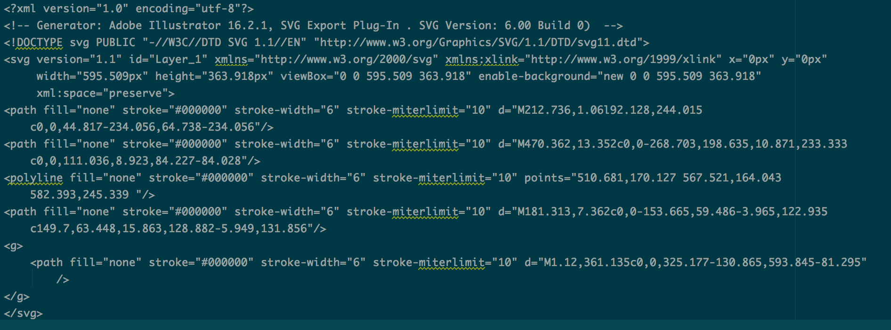
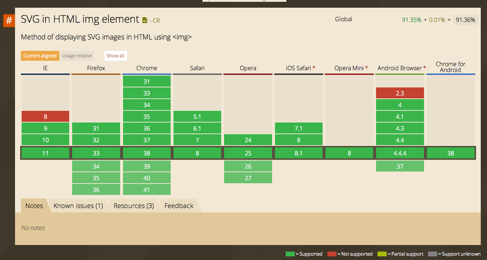

SVG
Why?9KB
for all resolutions
Quick History
- Good for situations with low bandwidth
- Instructions for browser to draw graphic
- 
But you probably use...

Simple SVG Usage
<img src="whatever.svg" />
SVGs can be used exactly like .png or .gif
Can be sized up
img[src$=".svg"] {
width: 100%;
}
CSS Attribute Substrings
SVG as background Image
.awesome {
background: url(path-to-svg/awesome.svg);
}
Browser Support and Fallbacks
SVG as <img>
document
.implementation
.hasFeature(
"http://www.w3.org/TR/SVG11/feature#Image", "1.1"
);
function supportsSVG() {
return document.implementation.hasFeature( "http://www.w3.org/TR/SVG11/feature#Image", "1.1" );
}
if( !supportsSVG() ) {
$( 'img' ).each( function() {
var src = $( this ).attr( 'src' );
if( src.indexOf( '.svg' ) !== -1 ) {
newSrc = src.replace('.svg', '.png');
$(this).attr('src', newSrc);
}
} );
}